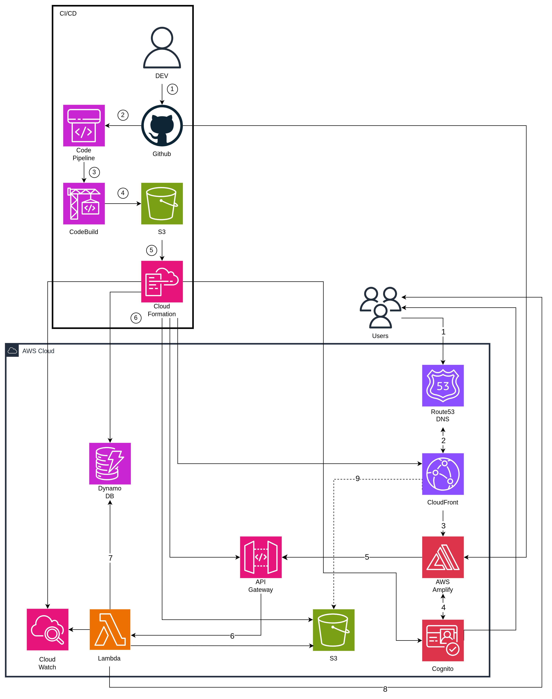
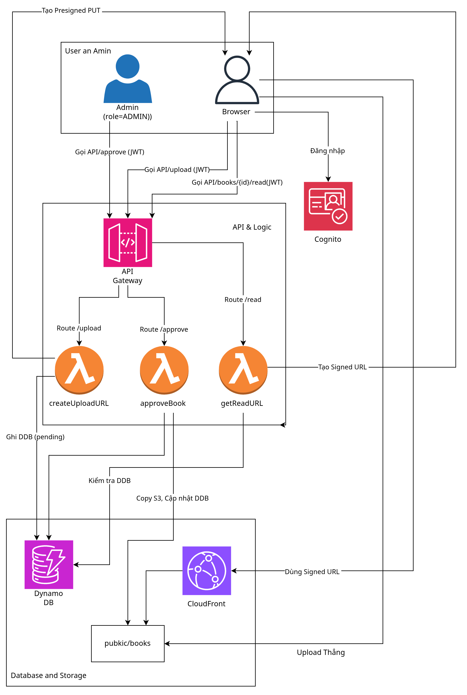
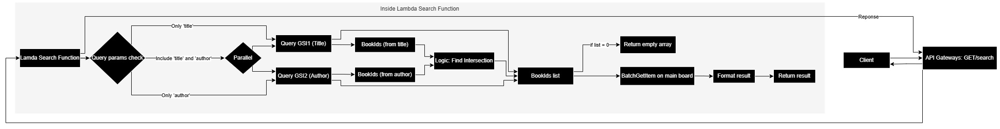

Dự án Thư Viện Online nhằm xây dựng một nền tảng serverless, chi phí thấp để lưu trữ và phân phối nội dung (PDF/ePub) cho một nhóm người dùng nhỏ (ban đầu ~100 người, nhóm người dùng gồm sinh viên/lab cần chia sẻ tài liệu nghiên cứu nội bộ có kiểm duyệt). Giải pháp này ưu tiên tính bảo mật, quy trình duyệt nội dung (Admin Approval), và chi phí vận hành minh bạch, tuyến tính khi mở rộng. Kiến trúc sử dụng AWS Serverless hoàn toàn (Amplify, Cognito, API Gateway, Lambda, S3, CloudFront, DynamoDB). Chi phí dự kiến cho MVP (không tính Free Tier) ≈ $9.80/tháng, đảm bảo khả năng mở rộng lên 5.000 đến 50.000 người dùng với chi phí dễ dự đoán.
Tài liệu và sách bị phân tán; thiếu một hệ thống truyền tải nội dung an toàn và có kiểm soát truy cập; quy trình thêm hoặc kiểm duyệt nội dung tốn thời gian và nhiều vấn đề liên quan đến pháp lý.
Xây dựng một pipeline serverless trên AWS: Người dùng tải lên qua Presigned PUT URL (tới S3 tạm); Admin phê duyệt → Lambda di chuyển file đến thư mục công khai (nhưng được bảo vệ); Người đọc truy cập qua Signed GET URL (từ CloudFront/CDN) để đảm bảo tốc độ và kiểm soát truy cập.


| Dịch vụ | Vai trò chính | Hoạt động cụ thể |
|---|---|---|
| Amplify Hosting | CI/CD + FE Hosting | Build & Deploy Next.js, quản lý domain |
| Cognito | Authentication | Đăng ký/Đăng nhập, cấp JWT, refresh token |
| API Gateway | Entry point API | Nhận request, xác thực JWT, route đến Lambda |
| Lambda | Business Logic | Xử lý upload, duyệt, tạo signed URL, ghi metadata |
| S3 | Object Storage | Lưu file gốc, file đã duyệt, được download qua Cloudfront Signed URL |
| CloudFront | CDN | Phân phối nhanh nội dung, chặn direct access qua OAC |
| DynamoDB | Database | Lưu metadata (tên sách, uploader, trạng thái duyệt) |
| Route 53 | DNS | Trỏ domain đến Amplify Hosting, API Gateway, CloudFront |
| CloudWatch | Monitoring | Lưu log Lambda, cảnh báo lỗi hoặc chi phí bất thường |
Tìm kiếm (Search):
uploads/.uploads/ sang public/books/ khi được duyệt.title và author (ví dụ: GSI1: PK=TITLE#{normalizedTitle}, SK=BOOK#{bookId}; GSI2: PK=AUTHOR#{normalizedAuthor}, SK=BOOK#{bookId}).GET /search?title=...&author=... để query theo GSI thay vì Scan.
Admins trong User Pool.cognito:groups: ["Admins"].approveBook, takedownBook) phải kiểm tra claim này; nếu thiếu group, trả 403 Forbidden.pending), và logic Admin duyệt (copy file).title, author và endpoint GET /search query theo GSI.Mục tiêu là thiết lập hạ tầng và cho phép người dùng đăng nhập.
uploads, public, logs) và cấu hình OAC (Origin Access Control).git push và FE tự động deploy.Mục tiêu là cho phép người dùng (đã đăng nhập) tải file lên và Admin duyệt file đó.
createUploadUrl:
uploads/ trên S3.PENDING).approveBook:
uploads/ sang public/books/.APPROVED).createUploadUrl để lấy URL.PENDING.approveBook).Mục tiêu là cho phép người dùng đọc và tìm kiếm sách đã được duyệt.
getReadUrl:
APPROVED không.public/books/.title và author vào bảng DynamoDB.searchBooks: Query DynamoDB dựa trên GSI (không dùng Scan).searchBooks).getReadUrl.react-pdf).Mục tiêu là “hóa cứng” hệ thống, làm cho nó an toàn và dễ giám sát.
uploads/).validateMimeType: Trigger khi có file mới, đọc “magic bytes” để xác thực đúng là PDF/ePub. Nếu sai, cập nhật status: REJECTED_INVALID_TYPE.takedownBook (API cho Admin) và deleteUpload (xóa file PENDING sau 72h).You can find the budget estimation on the: AWS Pricing Calculator
Dưới đây là ước tính chi phí hàng tháng nghiêm ngặt (giả định không áp dụng AWS Free Tier) tại quy mô MVP (100 người dùng).
| # | AWS Service | Region | Monthly (USD) | Notes |
|---|---|---|---|---|
| 0 | Amazon CloudFront | Asia Pacific (Singapore) | 0.86 | 10 GB data egress + 10 000 HTTPS requests |
| 1 | AWS Amplify | Asia Pacific (Singapore) | 1.31 | 100 build min + 0.5 GB storage + 2 GB served |
| 2 | Amazon API Gateway | Asia Pacific (Singapore) | 0.01 | ~10 000 HTTP API calls/tháng |
| 3 | AWS Lambda | Asia Pacific (Singapore) | 0.00 | 128 MB RAM × 100 ms × 10 000 invokes |
| 4 | Amazon S3 (Standard) | Asia Pacific (Singapore) | 0.05 | 2 GB object storage for books/images |
| 5 | Data Transfer | Asia Pacific (Singapore) | 0.00 | Included in CloudFront cost |
| 6 | DynamoDB (On-Demand) | Asia Pacific (Singapore) | 0.03 | Light metadata table (0.1 GB, few reads/writes) |
| 7 | Amazon Cognito | Asia Pacific (Singapore) | 5.00 | 100 MAU, Advanced Security enabled |
| 8 | Amazon CloudWatch | Asia Pacific (Singapore) | 1.64 | 5 metrics + 0.1 GB logs/tháng |
| 9 | Amazon Route 53 | Asia Pacific (Singapore) | 0.90 | 1 Hosted Zone + DNS queries |
| ≈ 9.80 USD / month | No Free Tier applied |
Mô hình chi phí này cho thấy sự hiệu quả của kiến trúc serverless: chi phí tập trung chủ yếu vào giá trị mang lại cho người dùng (Cognito MAU) thay vì trả tiền cho “máy chủ chờ” (idle servers).
| Rủi ro | Tác động | Chiến lược giảm thiểu |
|---|---|---|
| Chi phí tăng khi user đột biến | Cao | Giới hạn MAU, cache metadata qua CloudFront |
| Upload lạm dụng | Trung bình | Giới hạn ≤ 50MB/file, xóa auto sau 72h |
| File loại giả mạo/độc hại | Trung bình | S3 Event → Lambda xác thực MIME (magic bytes) |
| Giám sát quá tải | Thấp | CloudWatch alert, log 14 ngày |
uploads/ sau 72h.file-type) để xác thực đúng PDF/ePub; nếu sai, tự động xóa và ghi trạng thái REJECTED_INVALID_TYPE vào DynamoDB.uploaderID, uploadTimestamp, adminApproverID, approvalTimestamp để phục vụ truy vết.TAKEDOWN; tùy chọn di chuyển object từ public/books/ sang quarantine/books/ (không xóa hẳn) để lưu vết.Nếu chi phí tăng vượt ngân sách, có thể tạm thời giới hạn người dùng mới thông qua hệ thống mời để kiểm soát MAU Cognito và tối ưu hóa file.
Hệ thống này chứng minh khả năng xây dựng nền tảng nội dung bảo mật, tiết kiệm chi phí và mở rộng dễ dàng bằng AWS Serverless — phù hợp triển khai thực tế cho nhóm nhỏ. Rẻ